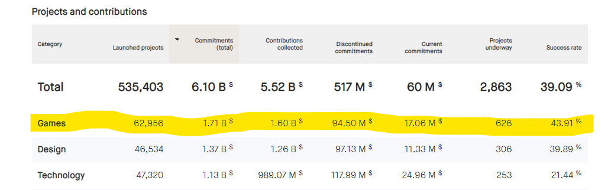
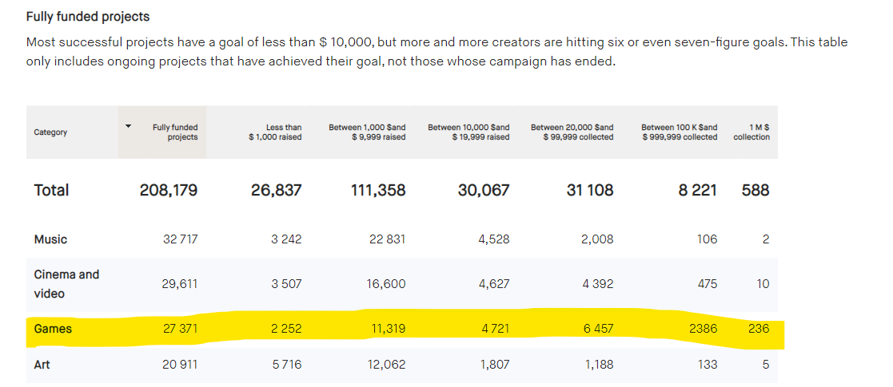
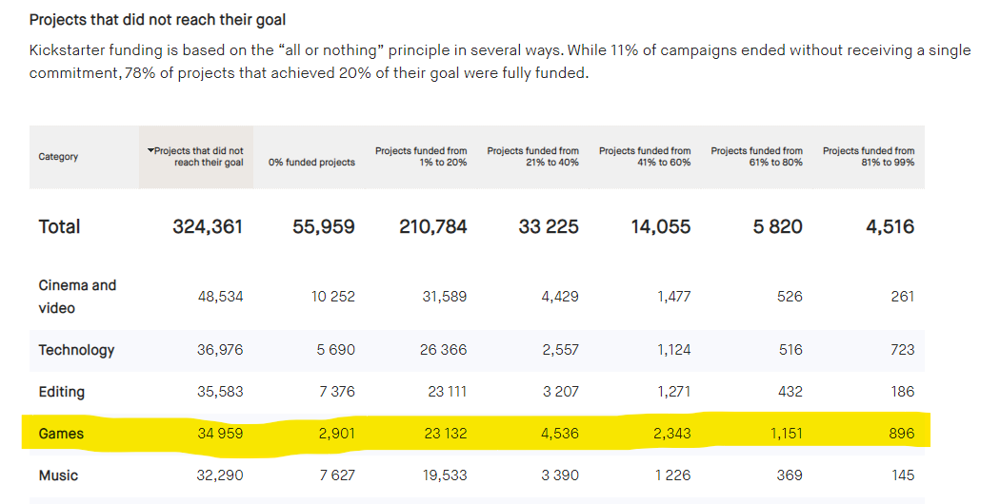

Crowdfunded games as a business
This game ideas Kickstarter

I knew the important shares that gaming takes on crowdfunding contributions way before I start to work with crowdfunding data for this article about metrics of words of crowdfunding and these coming articles about the user attention valuation model that will be applied to the gaming industry. But working with the data helped me know the real hard data about gaming and crowdfunding. If we take the example of Kickstarter here are the statistics published by this crowdfunding platform



more than 27k games projects fully funded a total of 1.6 billion dollars collected by the games crowdfunding category in Kickstarter. These are real metrics that show that there is an opportunity to be this game's ideas Kickstarter but kickstarting is not about creating and designing an amazing project but about audience development and about people like you who care. creating a crowdfunding project is simple and is just filling forms and crafting images and mockups but what is really hard is to sell the game ideas to those like you who could contribute to funding its development and marketing. For the game industry, you could see that lot of games crowdfunding projects end not reaching their goals.
Then if you want to be this game idea Kickstarter it matters for you to learn marketing and storytelling and to apply permission marketing and know the importance of people's time and attention in order to do your best to not steal attention from them with hacks and tricks. For learning how to market a game Kickstarter project there are for sure a lot of resources out there on the internet because As I have already said the internet has disrupted Universities if learning is only about delivery of learning content but learning is not about that but about connections, practice, and problem-solving in community.
For content about learning crowdfunding, I would recommend you to read this article first before you delve into your games crowdfunding learning journey because it will highlight you the possibilities and the correct process which is not a bottom-up process but up to bottom process meaning that it starts from those you seek to target with your game Kickstarter project first and way before we think about designing and implementing your game Kickstarter project page and social media posts.
Whatever option you will take for learning how to be this game crowdfunding expert and entrepreneur is up to you but what I am sure about is that there is a real and not small for crowdfunded games and there are a lot of game studios out there that are brilliant and qualified for developing well-designed games then you can take crowdfunded games as business and succeed.
PS: I will be publishing soon an article about metrics of words of crowdfunding that I have started writing way before this article. If it interests you visit my medium profile later to read it or this list titled Godda Games.